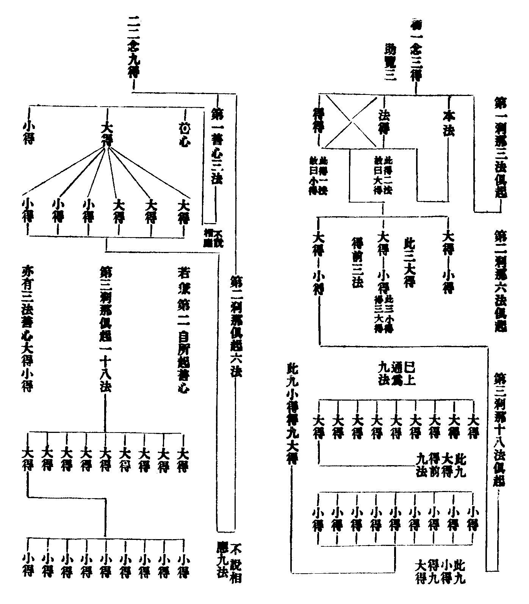

有界內真
或理性二乘真。或有真種子。
止觀輔行傳弘決助覽卷第三
止觀輔行傳弘決卷第八
有界內真
或理性二乘真。或有真種子。
論無我界別
搜要云。不同陰入。況復九耶。
煩惱果
陰等。
及別見
地住已上別見。非小乘道品所治。
分三科異
論。初陰入界三。初以四念治陰。
餘九能治準此可知
停心治五障。
論。未得記菩薩輕得記者
記引經云。我證阿鞞跋致。餘人永無。若詳此文。義似得記者輕未得記者也。又記引大品觀空不證品。甞撿經。乃是夢中不證品耳。經云。魔來語無方便菩薩言。汝當來世得菩提。佛言。阿鞞跋致行類相貌。是人永無。因以名字輕弄餘人(云云)。學者詳之。
從事理說
搜要云。從事雖隔。理具十乘。
攝諸心所
善惡通大地。各十心所。
輸門
委輸。
非三聚攝
無為法非色心等聚攝。
華他
上胡罵切。下音陀。漢時人。
一綖
音延。非。應作綫。
張顧之徒
梁張僧瑤。晉顧愷。並名畫之人。
玄文對信
十乘對十信。
論。因滅是色。獲得常色。受想行識亦復如是
經中釋云。色是佛性者。三十二相是如來常色。常不可改。故說色名佛性。如來真實之樂名畢竟受。如來真實之想是為常想。行者名壽命行。因緣故得如來常住。壽命識者乃是如來平等之心。彼文甚廣。今略節之。令知佛五陰耳。
閉手
手應作尸。
不與他同
古人前五如是凡權。後四如是聖實。
罿
音童。車上網。
涿
音卓。
記鴿
大論。祇桓寺舍利弗從佛行。有鴿為鷹所逐。佛令舍利弗言。此鴿子幾世作鴿。舍利弗以宿命智觀至前八萬大劫未得脫離。佛言。此鴿於恒河沙大劫中常作鴿身。經五百世中得利根。是時佛出世。度人無數。佛涅槃後。遺法在世。是人作五戒優婆塞。從比丘聞贊佛功德於是發心。願欲作佛。後三祇劫行六度行。十地具足乃得作佛。
春蒐
音搜。索也。謂索取物以祭。
夏苗
為苗稼除害。
秋獼
音尠。殺也。順殺氣。
冬狩
音獸。謂得獸。取之無所擇。
因果之意
果應作緣。
豈能令於性法門盡
性下脫一善字。
縱燒惡譜
縱下略一佛字。具足應云縱佛燒惡譜。
相為能遷
一者本相。二者隨相。本相者。疏云。已辯命根。諸相者何。頌云。相謂諸有為。生住異滅性。疏云。有為者所相法也。諸有為者。五蘊法。因緣所造故。色心等法從因緣生。名為有為也。生住異滅性者。出體也。謂能起名生。能安名住。能衰名異。能壞名滅。二隨相者。疏云。此生等相既是有為。應更別有生等四相。若更別有。應致無窮。彼復有生等相故。是則相上有相成無窮失耶。
頌云。此謂生生等
疏云。上句開。下句難。此者前四本相也。生生等者四小相也。謂前四相有生生等四種隨相。故成有為也。又云。諸行有為。由四本相。本相有為。由四隨相。生生等者。等取住住異異滅滅。上生字是小生。下生字是大生。小生生大生。故名生生。小相中住。住本相。故名住住。小相中異。異於本異。故名異異。小相中滅。滅於本相。故名滅滅。
於八一有能
此通無窮難也。豈非本相。如所相法一一應有四種隨相。此復名四展轉無窮。為通此難。故有斯頌。謂四種本相於八有能。四種隨相於一有能。功能別故。無無窮也。且如生相生色法時。九法俱起。一是本法。謂色自體。此上必有四本四隨。故成九法。於九法內。生不自生。能生餘八。本相中住。住餘八法。異滅亦爾。故四本相於八法中有功能。故此九法中。生不自生是生生生。住不自住是住住住。異滅亦爾。故本相中異不能自異。異餘八法。本相中滅不能自滅。滅餘八法。四本相於八法中有功能。故四隨相於一法有能。謂有功能也。由此道理。無無窮失也。已上並俱舍文。今更寫才法師注釋文於下。彼云。剎那得得少多。義開為三。初。約一念三得者。論曰。以法生時并其自體。三法俱起。第一本法。第二法得。第三得得。謂相續中法得起故成就本法。及以得得得起故成就法得(法得得本法即是大得。得大得時。其得即小法之得故。得之得故。皆依主釋。大得力強。成就二種。小得力劣。唯成一種。故一剎那三法中。大得二。小得一也)。如是。若善若染汙法。一一自體三法俱起。第二剎那六法俱起。謂三法得及三得得。第三剎那十八俱起。謂於第一第二剎那所生諸法有法得(初念三種。望第二念中起三大得。得前三法。起三小得。得三大得故成六法。第三念中通望前二。謂初念三法。第二六法。總成九法。今第三念起九大得。得前法。起九小得。得九大得。故成十八也)。二。二念九得者。準此所論(然初念善心三法俱起者。唯說善心。不說相應。第二六法者。唯說第二念起得得。初不說第二自所起者。善心亦有三法。謂善心及大得小得。并此第二念六法便成九法。第三念等准此說)。三。若約所相能以論。即第一念有二十七具起(謂本法為一。此上有四大小相。并前成九。同一大得得之。此大得上復有九。謂大得及四大小相。此九即以得得之。其小得上又九。謂小得及大小相。此用大得得之)。故論又云。一切過去未來煩惱及隨煩惱并生得善。剎那剎那相應。俱有無始無終生死輪轉有無邊得也(上注大小四相者。大則四本。小則四隨。詳解如論)。
謹示剎那一念三得二念九得圖子

眠人亦有不睡時
睡應作夢。
觀於一句生三十六法
前略引論中二法。
結成不思議乃至結成修德境
近人云。性德境不觀。況當文自云。若不推撿。何殊鳥空。請讀若不二字。又云。如前理性本無性過。約修門說。須明離計。約修推性。文自分明。何須固惑。又有人或將三境對於三即。或對三根。非矣。今謂只是修觀一人。以智照境。境發於智。若破執以為人演說。名化他境。義雖有三。旨歸是一。又有人云。性德不觀。謂本自二空也。修德須觀。謂推撿入空也。若爾。乃是修德自推修德耳。又有人云。性德但聞即悟。引除病品云。直聞是言。病即除愈。若觀性德悟。乃是服藥除病耳。且除病品文乃是大綱。分利鈍二根。及信法兩行。何甞分對修性二境。縱將性德以對信行。不須修觀者。且法華文句辯三周根性不同。喻云。如三刀斫本。利一。中二。鈍三。記釋云。此中聞悟似是信行。非不兼法。值佛聞悟信尚兼法。豈有末劫根鈍障重聞而悟耶。此大不可。又有人云。性德不觀。何以知之。荊溪云。理則直達法性。今問直達之言是修觀否。若不修者。能達之心又是何法。請熟思之。今試陳之。夫性德者。眾生之性常。諸佛之果理。三世菩薩之妙依止地。或析骨書經。或剜燈乞偈。藥王燒手。普明刎頭。只為求此也。十方如來千萬億劫說不可盡者。蓋是此也。眾生久劫以昏散故迷於性德。今大師令以止觀觀於昏散。昏散之性執若去。明靜之性德自彰。況復昏散本無今有。圓覺經云。一切眾生於無生中(性德)妄見生滅(性執)。如來因地知是空華。即無輪轉。亦無身心受彼生死。非作故無(推撿入空)。本性無故(本自二空)。況又修性之言散在廣文。今且引一十五文以證性德須觀。先引佛言。首楞嚴經云。譬如琴瑟箜篌琵琶(五陰)。雖有妙音(性德)。若無妙指。必不能發(修德)。若更開喻合法。使三境具足者。琴聲不從絃生。不從指生。不從絃指共生。不從無因生。有因緣故。亦可云從絃生。從指生等(化他)。又大經云。有國王愛箜篌聲。遂斷絃求聲。聲不可得。有大臣云。取聲之法須有方便。聲乃出耳。眾生佛性亦復如是。無有住處(性德)。以方便故(推撿)乃可得見。成菩提道(即發初住)。華嚴經云。應觀(修德)法界性(性德也。一句之中文略義廣。下去準之)。觀經云。正念思惟一實境界。大經云。能觀心性名為上定。大師云。本性寂滅(性德)。若不修道(修德)。無由契會。又云。境雖無相。常為智緣。又初緣實相造境即中。又云。正法者即觀法性之慧也。又云。初心研理。稍入相似。荊溪云。由修照性。又云。智能顯理。智生則理生。又云。智能照境。又云。一心三智照中道理。又云。一念心具十法界。還觀此心具足三諦。上所引文。意須觀性。讀者思之。
為徧責故
論中三十六問。一一問中但以自生一句而責耳。如云。問觀自生心云何四不說。又云。問觀自生心云何是魔行等。今言徧約四性者。是舉一自以例他及無因也。故次云。直舉自等責推也。於三十六境。以四性推撿令空所推之境。論云。云何是魔行。云何是外道。云何是三乘。云何巧度。云何是別教是圓教。云何是四三昧。云何是二十五方便。云何起十境成一心三智。云何十境成十乘法。乃至坐道場降魔轉法等。以自生一句責於魔外．三界．六道．三乘．四教．十境．十乘。從因至果。若四土等。故云徧也。是三十六境。從自生耶．他生耶．共．無因生耶。
翾
許緣切。
夢非夢短
多一短字。
齊物
莊子有齊物論。謂以性均故齊。
若均山毫
齊物云。天下莫大於秋毫之末。而太山為小。注云。夫以形相對。則太山大於秋毫也。若各據其性分。物冥其極。則形大未為有餘。形小不為不足。苟各足其性。則秋毫不獨小。而太山不獨大矣。毫者兔毫。在秋而成。故王逸注楚辭云。銳毛也。兔毛至秋而細。故以喻之為小也。
等鳧鶴
外篇駢拇云。鳧脛雖短。續之則憂。鶴脛雖長。斷之則悲。注云。各自有正。不可以此正彼而損益之。又云。故性長非所短。性斷非所續。無所去憂。注云。知其性分非所斷續而任之。則無所去憂而憂自去也。鳧。野鴨也。脛形定功。釋名云。莖也。直而長。如物莖。莊子喻意謂。鳧脛本短。或截鶴脛以續鳧脛。則有乖性分也。斷。丁管切。
福有五種
尚書鴻範亦爾。
字從于月反
只合云字從月。今似多于反兩字。
如此曇
此應作比。
止觀輔行傳弘決卷第九
見品見品
次見應作思字。
若未破故
故應作者。
如星之月
之應作中。
吹唾
大品經云。三千大千世界中諸火一時皆然。譬如劫盡燒時。菩薩摩訶薩欲一吹令滅。當學般若。論三十二釋云。火多無量。口風甚少。何能滅之。答菩薩行般若波羅蜜時。因得神通。能變身令大。口風亦大。故能滅之。又以神力。小風能滅。如小金剛能滅大山。菩薩以火為害處廣。憐愍眾生。故以神力滅之。此是事釋也。若就理解。三千即空。一唾也。三千即假。一吹也。即唾即吹同時者。即中也。
名一眾生
或多一字。或一字應作為。
不至至
經云不至者是大涅槃。凡夫造罪故未至不至也。不至至者名大涅槃。不造諸惡名不至至。至不至者。至者名二十二五有。菩薩永離。故名不至。為度眾生故亦名至也。至至者。至名二十五十有凡夫。初二三果煩惱因緣故名至至。
界性
惡五陰是也。
依章安解復是一塗
章安云。初句證智。次句明證理。第三句明證斷。第四句明證應。復次不聞聞是證聖行。聞不聞是證梵行。不聞不聞是證天行。聞聞是證嬰兒行。又云。不聞聞是圓淨記主一塗之說。意云並不似智斷因果釋也。
即吹而唾
諸法不生。
即唾而吹
果由因剋。
吹唾成就
智斷圓。
五行竟。次明十功德。云十事功德等
十事功德在高貴德王菩薩品中。經中涉五卷解釋。一者不聞者聞。聞已能為利益等。二者修大涅槃。昔不得而今得之。三者得無緣慈。四者唯修九事不修淨土。五者諸根完具。乃至十者入大涅槃等。具如備撿錄出也。
若作圓義。光宅似當
光宅云。五行十德。體一義異。同是因善。起自外凡。終於窮學。感於習果。謂之為行。酬前習因謂之功德。乃是行因德果也。記主以其於外凡聞涅槃理。亦一往判為圓。章安引光宅云。習因習果乃菩薩之位。不開佛乘。故記云。似當耳。豈比法華五乘七善一例佛乘耶。然涅槃自有次第五行。故今少分許之為圓。若據經中。先明五行。次說十德。則五行多分在因。十德至地。下記中自釋云。約次第邊。由五行滿得入初地。初地是第一功德。乃至以十德對十地。若作總別解者。始從初地至第十地。恒具五行及十功德。十德對地又復宛然。
非分別智能知
疏中無非字。
泥洹智不洎
洎應作測。
非有故非邪
邪應作斜。
白銀琉璃漸漸互現
長阿含云。從月初一。白銀面現。至十五日。銀面全現。琉璃全隱。從十六日去。琉璃面現。至三十日。琉璃全現。白銀全隱。經中又云。十六日去。黑衣侍臣一兩上侍。至三十日。諸臣併上。故稍稍虧。從月初一日。諸臣漸下。至十五日。諸臣都下。故稍稍滿。又云日天子放六十種光。奪月故虧。若月天子處正殿。後光對日天子。是故盛滿耳。
根本二有此難者不應為答
十四難者。謂世界及我常。世界及我無常。世界及我亦常亦無常。世界及我非有常非無常。又世界及我有邊．無邊．亦有邊亦無邊．非有邊非無邊。又死後有神去後世。無神去後世。亦有神亦無神去後世。非有神非無神去後世。是身是神身異神異。外人曰。若佛是一切智人。此十四難何以不答。答曰。此事無實故不答。諸法有常。諸法有斷。都無此理。是故不答。譬如人問[穀-禾+牛]牛角得幾斗乳。是為非問。故不應答。
但改無想以替有想
謂有色無想。無色無想等。
假立於己
若云假立己稱則易解。
此中空無礙謂太虗空乃至窮隙等
疏釋云。此中者於略所說三無為中。虗空但以無礙為性。由無礙故色於中行。又云道諦是有為無漏。三無者是無為無漏。今記云。謂太虗空為性等者。乃是記主釋耳。非彼疏也。意謂無漏之法是無礙性。非是頑空。乃窮隙等之無礙也。
擇滅謂離繫
出擇滅體也。擇滅以離繫。
如緣一色時乃至礙餘色等
如眼與意識專一色時。所餘不見聞等。色聲香味觸落謝過去也。於專一色時。合有一類五識緣彼已謝五境。由正專一色。餘五識不得起。此未起五識畢竟不生。謂五境已謝。故五識唯現在。不合緣過去境故。未來五識得非擇滅。言觸等者。等取法界中有與能緣同時為所緣境。謂他心智所緣心所也。五識等等取意識中亦有能緣同時所緣境也。謂他心智唯緣現在緣心。不緣所緣所不緣心。正緣心時緣所。他心智得非擇滅。正緣所時緣心。他心智得非擇滅。此約同時合緣者說也。已上皆疏中釋。
優陀那風觸七處
如箋難引。
相續名住
住應作假。
以此為彼
若類上文。應云在彼。則以此為彼耳。
故滅得生
滅恐應作識。
生思
上文云無緣思不生。
七者彼彼空空中中最下無復彼此
楞伽第二云。第一相空謂一切法自相共相空。分析推求自他及共皆不生故。第二名自性空。謂一切法自性不生。第三名無行空。所謂諸蘊本來涅槃。無有諸行。第四名行空。諸蘊由業及因和合而起。離我我所。第五名一切法不可說空。謂一切法妄計自性。無可言說。第六名第一義聖智大空。謂得自證聖智時。一切諸見過習悉離。第七彼彼空。謂於此無彼。譬如鹿子母堂無象馬牛羊。我說彼堂空。非無比丘眾。非堂無堂自性。非謂比丘無比丘自性。一切諸法自相共相。彼彼求不可得。名彼彼空。此彼彼空。空中最麤。汝應遠離。
故此等總
引大品．楞伽等三總文。
衛元嵩破壞佛法
上表滅佛法。有文在下。
押
押應作壓。
之與華恒
恒應作垣。垣墻也。
守雌
老曰。知雄守雌。
守弱
剛強者死之徒。柔弱者生之徒。
患智
智慧出於大偽。又云。絕聖棄智。
患身
吾所以有大患者。吾所以有身。
身毒
音篤。
苦縣
苦。音戶。
諡老聃
聃字是諡。老非諡。
柱史
在帝王柱之傍。為史官。
著述改足
足。即喻反。
軋軋若抽
思軋軋若其抽。如抽絲也。
止觀輔行傳弘決卷第十
於大助中
助應作即。
贆
音標。
蜬
又音含。
一月二時
一月兩次行欲。可以養生。
三種色
記引大論。次引大品。文意是同。搜要云。大品過一切色。是滅可見有對色也。滅有對色。是滅不可見有對色也。不念種種色。是滅不可見無對色也。初色是色。次色是五根四塵。第三色即法入少分無表色也。空觀成時無表亦破。
五根四塵
五根有對。聲香味三不可見。
無教
無表之名。
三五四有十
三地行五法。四地不捨十法。
五十二六六
五地遠離十二法。六地具足六法。
七二十八五
七地不著二十法。八地具足五法。
為因
世第一後。無漏因緣引苦法忍初心入見道。有無漏法生。名苦法智忍。此剎那心斷苦下十惑(一心)。次起一剎那心。名苦法智擇滅無為(二心)。次觀上界苦。名苦類智忍(三心)。斷上界苦諦下煩惱法後。得苦類智(四心)。次觀欲界集。集法智忍(五心)。集法智(六心)。次觀上界集。集類智忍(七心)。集類智(八心)。次觀欲界滅。滅法忍智(九心)。滅法智(十心)。次觀上界滅。滅類智忍(十一心)。滅類智(十二心)。次觀欲界道。道法智忍(十三心)。道法智(十四心)。次觀上界道類智忍(十五心)。已上名未入初果已前七智八忍。此十五心後無間道。斷諦下見惑名初果向。次起一剎那道類智是第十六心。
大論五十三云。爾時須菩提作是念
論云。爾時眾中天人菩薩作是念。般若波羅蜜。三世諸佛皆從此中生。須菩提小人。云何佛讚。欲說般若波羅蜜當如所說。是故言須菩提所說皆承佛力(云云)。今記中文略云須菩提作是念者。本是人天菩薩念耳。
依梵法治
眾僧默擯。
隈水曰港
派水曰港。隈字恐誤。
不知三空
所施物空。能施人空。受施者亦空。
俱舍頌曰。但由悲普施。被析身無忿。讚歎底迦佛。次無上菩提。於如是四位。一二又一二。如次修圓滿。初一謂布施。次二謂戒忍。次一謂精進。次二謂禪智。如次對四句
撿疏略消。但由悲普施者。明施也。若施時乃至眼髓而無悋惜。但由悲心。非求人天生也。此明布施滿也。被析身無忿者。明戒忍二也。若時菩薩被析身支。心無少忿。析身不報。戒滿。心無忿。忍滿也。讚歎底沙佛者。此身明精進。若時菩薩勇猛精進。見底沙佛。忘下一足。經七日無怠。淨心讚佛(云云)。此精進滿也。次無上菩提者。明定慧也。金剛喻定隣次成佛。名無上也。此定慧波羅蜜多滿也。如是四位者。初是施位。第二無忿位也。第三精進位。第四次無上位。一二又一二者。一者初施位。一波羅蜜多也。二者無忿位。二波羅蜜多也。又一者。精進位波羅蜜多也。又二者。無上位二波羅蜜多也。如次對四句。是記主言。非俱舍語。
且寄一法
破假一法。開十六門。
離邪曲誤
內正直是。外邪曲非。
論。入假四法
入假意有入假因緣油法。
釋第二句
謂身力雄莊乃至無能當者。
故在七地
十功德對十地。今七功德知是第七地。
飯牛
飯。上聲。書注云。以雜草飼牛。
舜膳
膳應作禪。謂舜禪位與大禹。
禪
或應作單。音丹。
獶
奴巧反。
句陳
星名也。其星有六。在北極紫微宮中。
不可違爾
搜要云。不可率爾。
腠理
脊骨邊。
儜
女庚反。
佛教明劫
佛經名混沌之名。今借混沌名耳。
唯識所計
識論師計三無二有。
楞伽授聲聞記
經有問答。無授記語。
方等云。第二第三授我等記
經云。昔於王舍城授聲聞記。今復於舍衛國復授聲聞記。昔於波羅奈授聲聞記。乃至云第二第三授我等聲聞記。文殊語舍利弗言。枯樹生枝不。焦糓更牙不。夫授記法如虗空。無色無形。如來以如如性授汝等記。不即如不離等。今詳是授聲聞應佛記。非法性記。況又是斥奪之意耳。
初意自為已入滅者
入無餘界。入方便土人也。
斥鈍根菩薩
求聲聞涅槃者。
除初同句
論除了。
更加假中
加了。
老子化作佛
老子謬說化胡王成佛。已自非矣。今云自化佛。更非也。又是一訛說耳。釋迦本出周昭王時。老子出周定王時。相去三百四十五年。又何甞化胡耶。釋迦既非胡人。又不曾為王。有云。老子死。葬在扶風。扶風。秦地也。莊子云。老子死。秦佚入吊。三號而出。史記云。蓬[〦/糸]而行。不知所終。驗非化胡明矣。
止觀輔行傳弘決卷第十一
佛果不出二諦外
前二論之未釋。
設
應作謂。
弓刀槊
音朔。
乃至十二因緣。七覺。八正。皆以慈為本
經云。修習慈心。能生無量善根。謂無常。生滅生滅。四念處。七方便。十二因緣。煖頂忍世第一。見道。修道。正勤。如意。七菩提分。八道。四禪。四無量心。乃至三昧智。他心智。神通智。本際智。聲聞智。緣覺智。菩薩智。佛智。如是等法。慈為根本耶(云云)。
翼從
從去聲。輔翼侍從者。
謂呼是血
呼謂是血。寫倒。
異法出生
經云。異法出生。異法無故。異法滅壞。疏云。異法有故。異法出生。諸法皆為因緣所起。因緣於諸法名之為異。有異因緣便有諸法。故云異法有故異法出生。如葵藿以日為異緣。芭蕉以雷為異緣。眾生以法身慈誓為異緣亦爾。若無佛慈。眾生終不自能覺悟。如磁石吸鐵。
論泉池
萬派所聚也。故海名朝夕池。又名醎池。
我等所行呪術經書。若讚頌時。瞿曇所有功德入我經中來者。是瞿曇實功德。何以故。瞿曇父母真正法輪
文殊欲引尼乾子。亦先學彼法。後導歸佛道。今記文少誤。經云。爾時文殊師利童子。及五百化弟子。聽次第坐。受用尼乾戒法。威儀殊勝。於彼時時讚說三寶功德。亦復讚歎薩遮功德。令彼諸人心相親附。復於異時知眾已集。文殊師利便作是言。我等所行呪術經書毗提遮經。若讀誦時。沙門瞿曇所有功德。有入我等經中來者。是沙門瞿曇有實法功德。何以故。是沙門瞿曇所生。成就父母清淨轉輪王種。以百福相莊嚴其身(云云)。轉正法輪。經作轉輪王種耳。
引難況易
明中道之難。引空假之易。
旃檀如法性故
似多故字。
足故大經
足應作是。
見鶴
經只作鶴。
具如向簡
雖即屬陰。攝陰不盡。
而論總別
識心是總。欲瞋慢是別。
報非報別
三科皆報。所發者非報。
九夷等四
四者。謂九夷。八狄。七戎。六蠻。謂之四海。注云。九夷在東。八狄在北。七戎在西。六蠻在南。夷字從人執弓。狄是犬種。戎人荷戈。蠻亦蟲種。皆無禮教。故以夷狄之字賤之。夷有九者。一玄菟。二樂浪。三高麗。四滿飾。五鳧臾。六索家。七東屠。八倭人。九天鄙。餘狄戎各有名。
論徑[仁-二+延]
語出莊子。彼云。肩吾問於連叔曰。吾聞言於接與。大而無當。往而不反。吾驚怖其言。猶河漢而無極也。大有逕庭。不近人情。注云。上古定切。下透定切。逕庭。激過也。謂言語宏大。不近人情。彼云激過。今云越次。義亦同。
五下分有身見戒取疑
妙樂記云。此三徧攝一切見惑。問。下分有五。本是思惑。何故三分屬見。答。此惿舍中明隨眠煩惱。乃於辨九結中云。見結者謂三見二取。三見有十八物。二取亦十八物。見十八者。苦下有身見邊見。四諦下各有邪見。合成六見。三界各六。故成十八也。取十八者。苦下二取。集滅各謂見取。道下亦二取。故成六取。三界各六。名十八取。三見是所取。見取。戒取。是能取。預流斷三結者。頌云。攝門根故三。言攝門者。謂身見在苦門。戒禁取在苦道門。疑通四門。斷三結者。攝彼三門。言攝根者。謂邊見依身。見取依戒。邪見依疑。故斷三結攝彼三根。若據此文釋五下分。酌然三結屬見明矣。若大師判為思惑者。通總而舉之耳。而別取貪瞋二分攝欲界思也。
皆有能所
緣無明。緣法性。真緣為所。以所顯能。
百千萬億
萬億下必闕眾生字。
不與唯識義同
唯識云。三人永不發心。
上菩薩位
上應作至。
與無量一人避走
寄犯國法者喻之。
舉破徧等例之可見
前三破徧。為成一心破徧。
三俱初發
前大品三人初發心者。
破神通者
有師謂。止觀大意一章。并章安釋十二部經。觀心一句是頓頓。其論十乘漸頓。故義例敘。他問云。圓頓止觀是何頓。答。是漸頓。何以得知。如第一卷以三喻喻止觀。以通者騰空喻於圓頓。至識通塞中破於神通。神通被破。故非圓頓。
師資不成
三種止觀本傳之南嶽。
今借此文
經中本喻人身難得。如瓜上土耳。
幾法現前
現前是三昧成就。
安我頭南首面向北
甞撿經。非誤。
止觀輔行傳弘決助覽卷第三